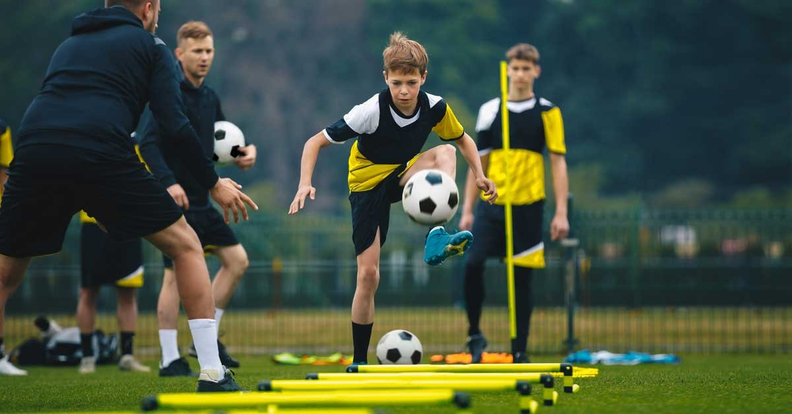

About Soccer Fitness

Soccer players need endurance, speed, strength, and control to perform well at every level of the game.
Key Training Areas
Endurance
Soccer matches last 90 minutes. Building cardiovascular endurance through long runs and interval sprints keeps players effective from kickoff to the final whistle.
Speed and Agility

Quick direction changes and explosive speed are essential for beating defenders and making defensive recoveries.
Strength
Core and leg strength help players win physical duels, hold off opponents, and generate powerful shots on goal.